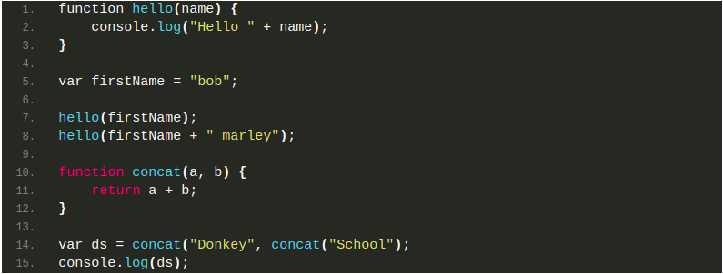

💪Challenge1 : Tranformer du code JavaScript en code TypeScript
Voici un morceau de code JavaScript :
Tranforme ce code pour qu’il devienne du TypeScript, en précisant le type des données où c’est nécessaire. Poste ensuite ton résultat via un gist.
Critères de validation
- Les types doivent être spécifiés ou il faut
- Le code doit pouvoir être transpilé, puis lancé sans problème et afficher le même résultat dans la console